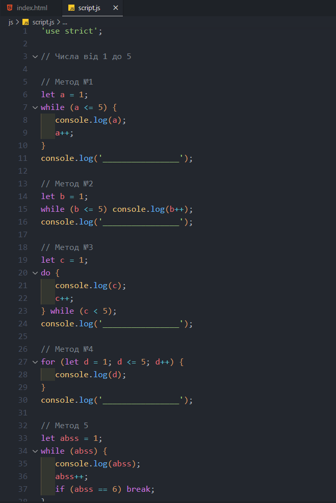
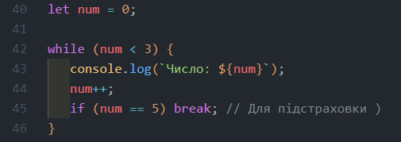
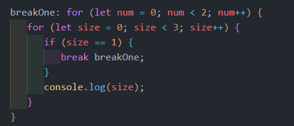
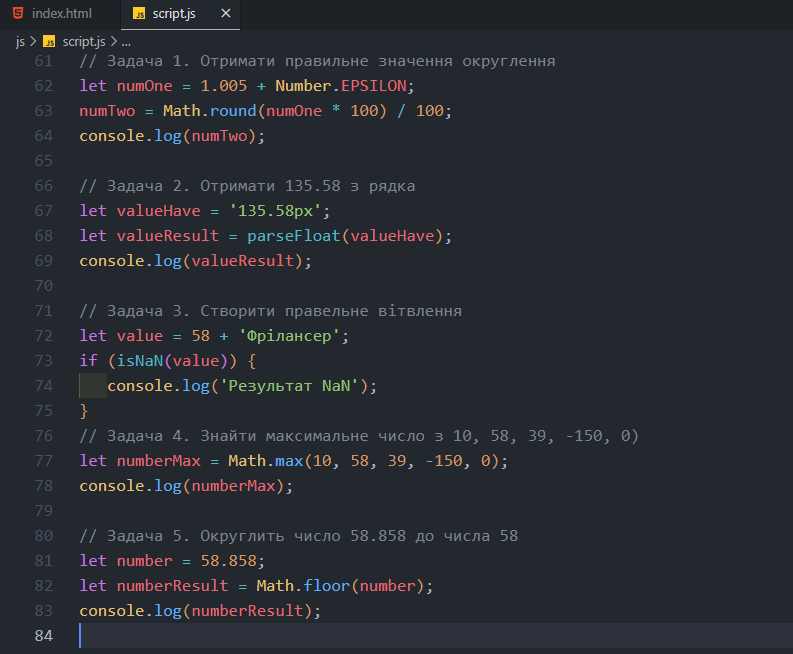
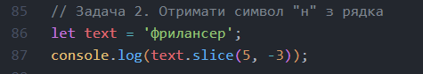
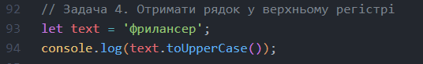
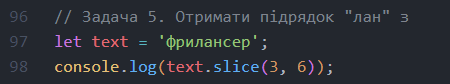

Основы синтаксиса JAVASCRIPT
Завдання 1
- Варіант 1: Все вірно
- Варіант 2: Все вірно
- Варіант 3: Синтаксична помилка: неможна використовувати інкремент без об'явлення змінної
- Варіант 4: Помилка - консоль видасть ( 0 ) тому, що використана постфіксна форма інкременту, на другому кроці видасть (1)
- Варіант 5: Помилка - поверне 11, тому оператор || повертає перше вихідне значення
- Варіант 6: Поверне (0)
IF ELSE в JAVASCRIPT.
Завдання 1
- Варіант 1: Поверне: "Брехню", тому що суворе порівняння
- Варіант 2: Поверне: "Істину", тому що НЕ суворе порівняння
- Варіант 3: Поверне: "Істину", тому що два True в умові, а оператор (ТА) поверне останнє, якщо всі True
- Варіант 4: Поверне: "Істину", тому що умова (" ") - поверне True
Циклы FOR и WHILE в JavaScript.
Задача 1

- Задача 2: Помилка - результат коду буде 1
Задача 3

Задача 4

Числа в JAVASCRIPT

Строки в JAVASCRIPT
- Задача 1: Не вірний запис потрібно зворотні лапки (` `)
-

- Задача 3: Помилка - буде конкатенація рядка і відповідь буде "123456"
-

-

- Задача 6: Консоль поверне: false